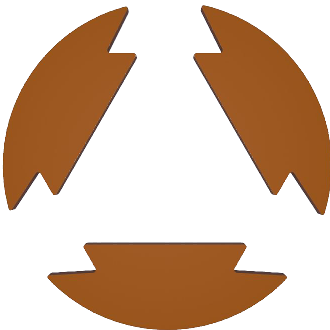

SVG contour test
Private visual test page. Not linked from the site navigation and excluded from search indexing.

PNG используется только как подложка на этой тестовой странице. Финальный контур построен из одного базового сегмента с поворотами 120° и 240°.